Science · Policy · People · Action
Fifteen years
of impact.
From green campuses to global policy forums — APSCC connects education, research and grassroots action to drive measurable sustainability outcomes.
Flagship Pillars
Six pathways to
sustainable transformation
Green Campus Initiative
Talloires Declaration, Green Protocol compliance, baseline mapping and sustainability literacy across educational institutions.
Top-down · Symbolic commitmentLab-to-Land Environment Education
Bottom-up participation driving attitude change across the water–food–energy–biodiversity–waste nexus.
Bottom-up · Up-cyclingRegenerative Agriculture & Topsoil Restoration
Whole-system approach to topsoil pollution prevention, ecosystem restoration and organic food production.
Whole system · TransformationConserving Fauna of Concern
Joint-action conservation networks protecting species from peacocks to Pondicherry sharks — living in harmony with nature.
Joint action · Fauna networksWetlands & Aquifer Restoration
Mobilization & participation approach to habitat restoration and conservation of lakes, wetlands and aquifers.
Mobilization · Habitat conservationIndustrial Symbiosis & Green Skill Development
Revitalizing village industries through green skill training, capacity building, technology transfer and export promotion.
Refabricating · Green skillsFlagship Activity · 2025
International Coastal Cleanup Day 2025
A landmark mobilization across Puducherry's coastline in partnership with Pondicherry University, Forest Department and local communities — clearing tonnes of waste while training volunteers in marine conservation science.
Collective Impact
From campus corridors
to UN assembly halls
APSCC's work spans local action in Puducherry to global influence at UNEP, FAO-GSP, UNFCCC and IPBES.
Accreditation
UNEA Observer Accredited to the UN Environment Assembly with Observer StatusGlobal Reach
15+ Partners Collaborations with FAO-GSP, UNFCCC, ULSF, IIT Madras, Hamburg University & moreRecognition
ISOL NGO Award Recognised for value-based sustainable organizations at the International Conference on Holistic Organisational Sustainability, 2026Community
1,000 Cities by 2030 Green Campuses for Green Cities campaign targeting campuses across 1,000 citiesAligned with
UN Sustainable Development Goals
Complete Record
Activities & Events
Every initiative APSCC has undertaken — from local campus workshops to global policy participation.
 Conference2020
Conference2020Bridging Disciplines for a Sustainable Future
APSCC co-organised ICIAEESD 2020 in Puducherry — an interdisciplinary platform for academics, policymakers and practitioners advancing SDG-aligned sustainability research.
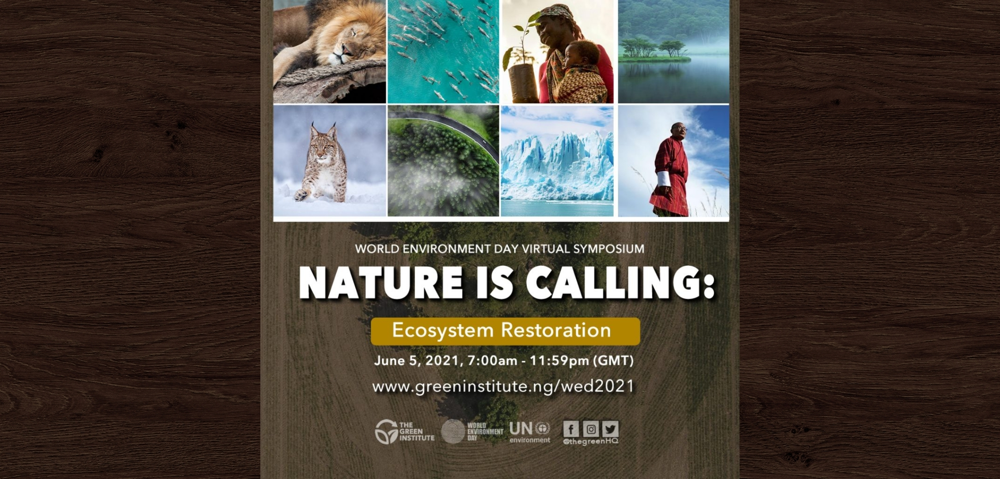
Conservation2021Answering Nature’s Call: APSCC Partners with The Green Institute for World Environment Day 2021
APSCC partnered with The Green Institute for a virtual symposium themed ‘Nature is Calling’ on World Environment Day 2021 — bringing together 25+ global sustainability leaders to discuss ecosystem restoration.
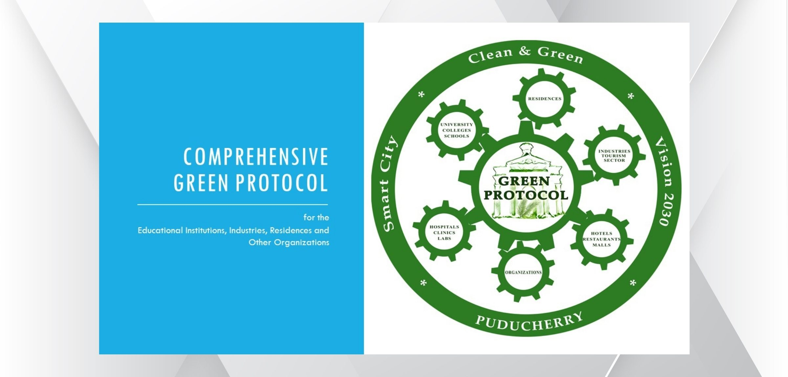
Program2019A Government Office Goes Green
APSCC partnered with the Chief Secretariat of Puducherry to implement 40+ green measures — from LED retrofits and rainwater harvesting to air-purifying plant networks — a model for sustainable government offices.
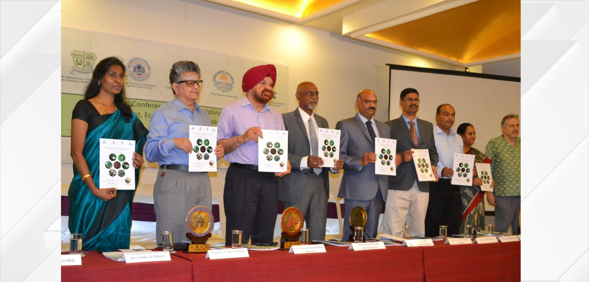
Education2020Green Protocol in Action: Capacity-Building with Sorbonne, Pondicherry University & JNV
APSCC, with Université Panthéon-Sorbonne (Paris), Pondicherry University and Jawahar Navodaya Vidyalaya, ran a transformative training programme on the Green Protocol — regenerative agriculture, resource recovery and green entrepreneurship.
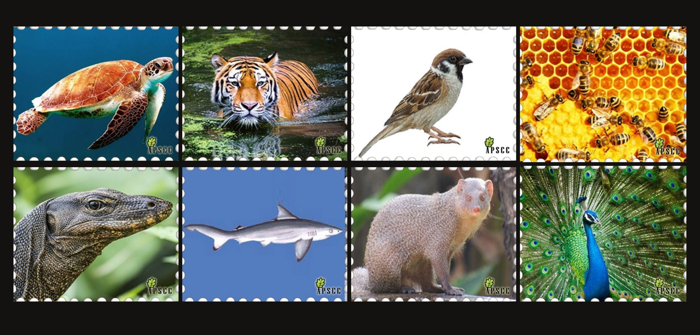
Conservation2020Uniting for Wildlife: The Wildlife Protection & Conservation Network
APSCC, Pondicherry University and Government of Puducherry departments jointly launched a network targeting nine species of concern — including the Olive Ridley Turtle, Peacock and Pondicherry Shark.
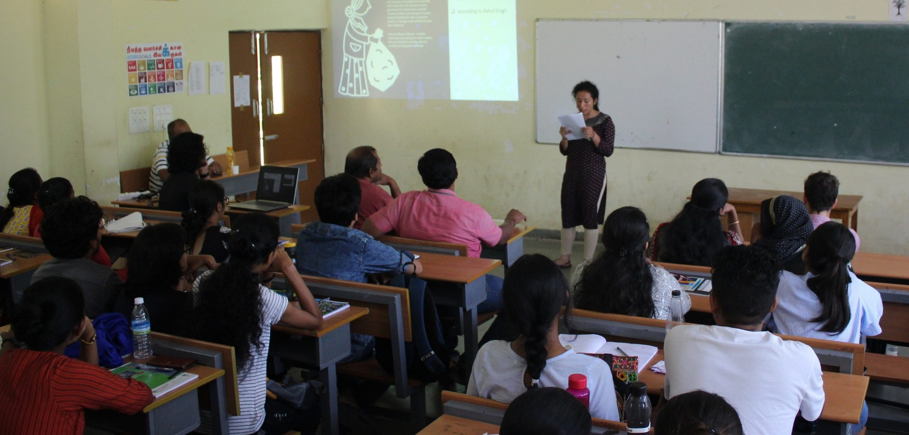
Education2019Health, Environment & the SDGs: Seminar on Good Health and Well-Being
APSCC organised a seminar on SDG 3 — Good Health and Well-Being — with Pondicherry University and Durham University (UK), exploring the environment–health nexus.
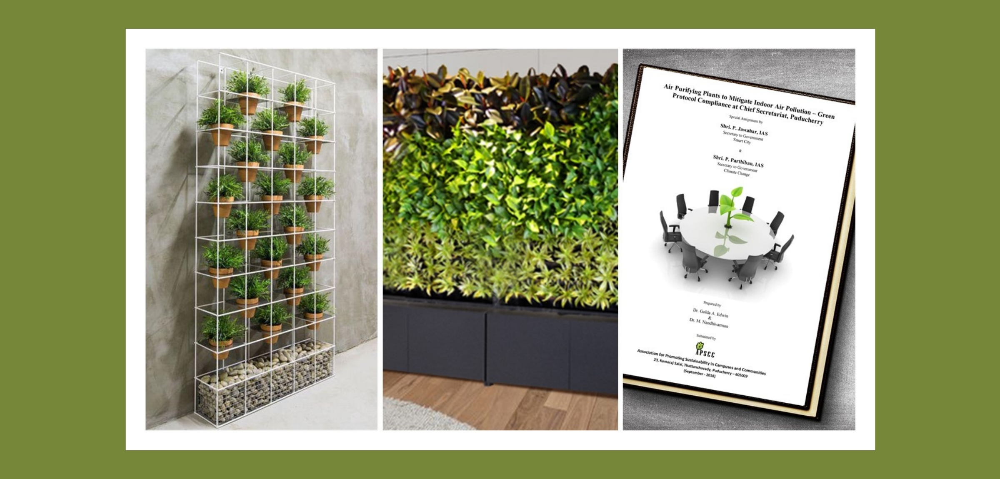
Program2019NASA Clean Air Plants at the Chief Secretariat
APSCC partnered with the Chief Secretariat of Puducherry to introduce air-purifying plants — backed by NASA’s Clean Air Study — under the Comprehensive Green Protocol, tackling VOCs, benzene and formaldehyde in government offices.
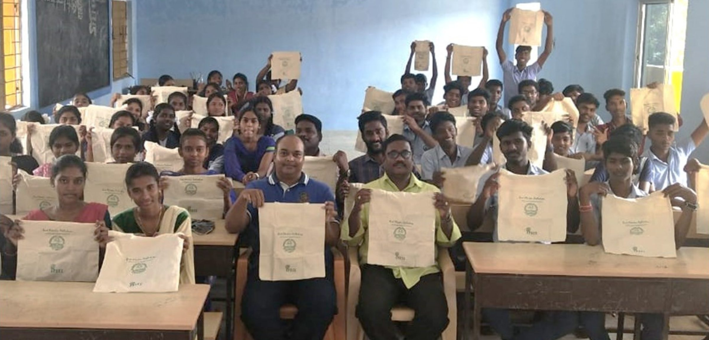
Conservation2019One Bag at a Time: Cotton Bag Drive at Kamban NSS Camp
During a 7-day NSS camp at Kamban Government Higher Secondary School, APSCC promoted a Cotton Bag Drive — distributing reusable bags and engaging students in practical action against single-use plastic pollution.
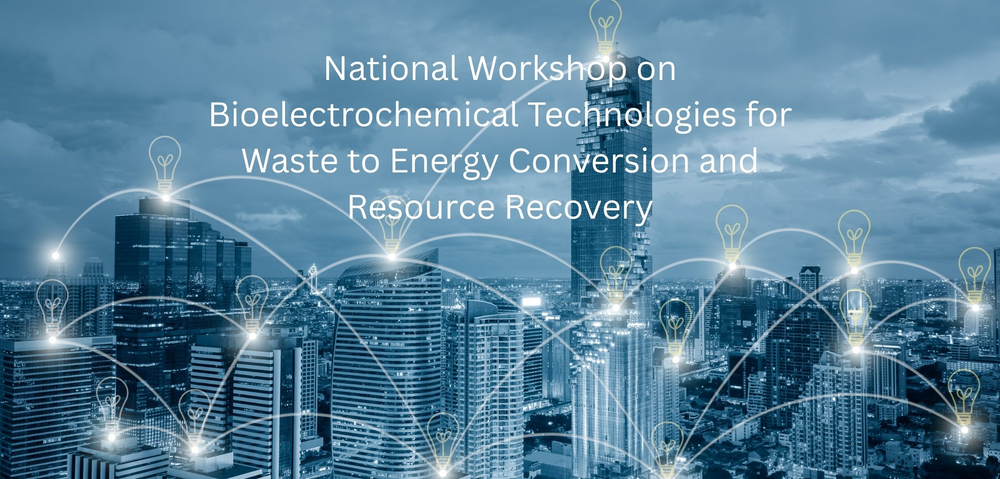
Conference2019Waste to Energy: National Workshop on Bioelectrochemical Technologies
APSCC co-organised a three-day SERB-DST national workshop on Bioelectrochemical Systems at Pondicherry University — microbial fuel cells, wastewater treatment and resource recovery, with experts from IIT Roorkee, CSIR-IICT, IIT Palakkad and SVNIT Surat.
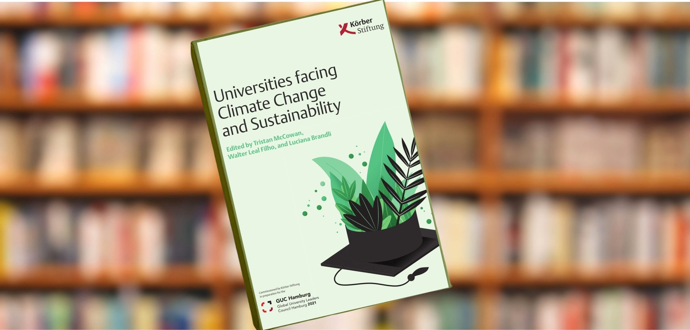
Research2021Universities as Climate Leaders
Dr. Golda A. Edwin and Dr. M. Nandhivarman contributed to a landmark 7-country Körber Foundation study on higher education leadership and governance for sustainability and climate change.
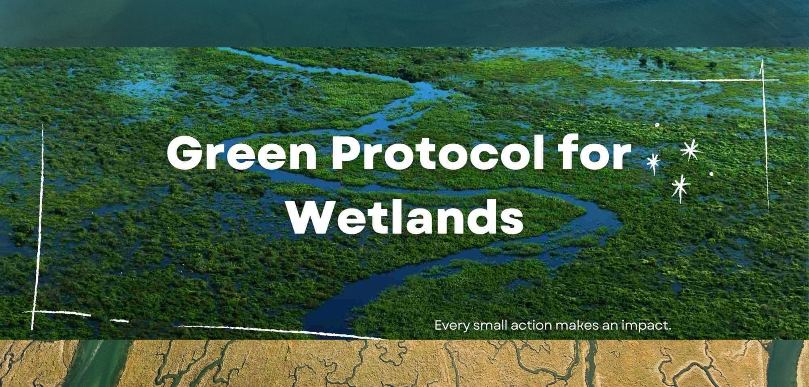
Conservation2022Green Protocol for Wetlands: A Roadmap for Conservation
APSCC and Pondicherry University unveiled a five-strategy roadmap for wetland conservation, backed by the Forest and Agriculture Departments of Puducherry.
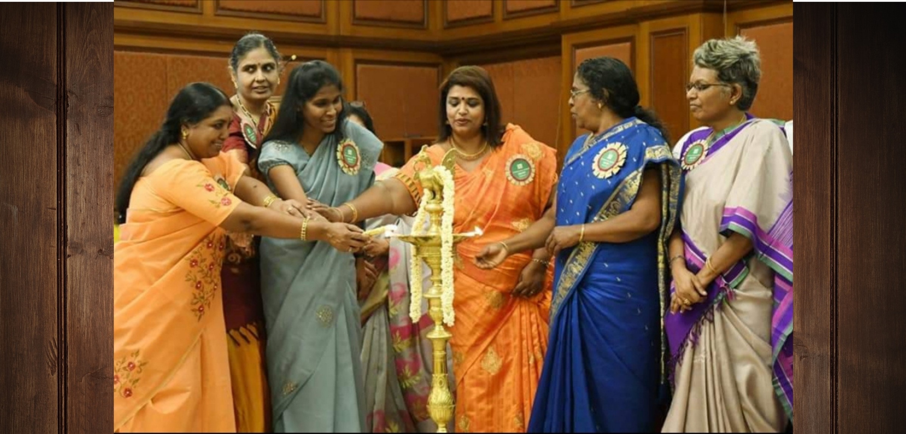
Conference2021International Seminar on Eco-Conscientious Reflective Practices
APSCC and Bharathidasan Government College for Women co-hosted an international seminar uniting 200+ delegates to turn environmental awareness into actionable sustainability.
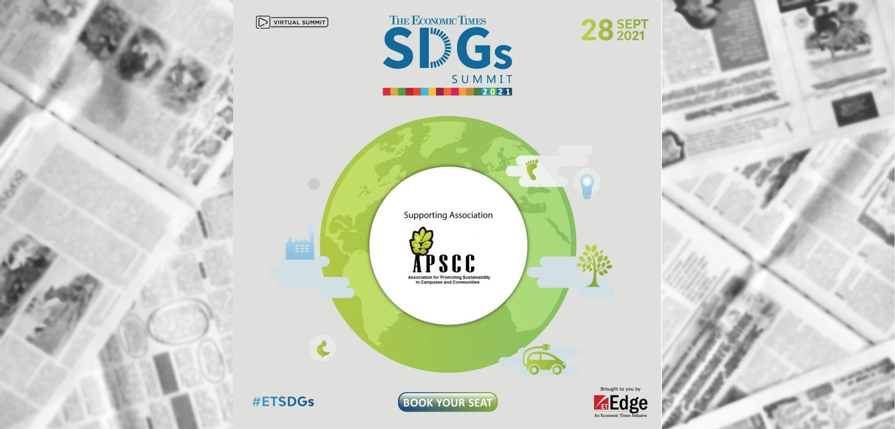
Partnership2021From ESG to SDG: APSCC at the Economic Times Sustainability Summit 2021
APSCC served as a supporting association at the Economic Times 'ESG to SDG: Connected Paths for a Better Future' summit — a landmark corporate sustainability event bridging ESG principles with the 2030 SDG agenda.
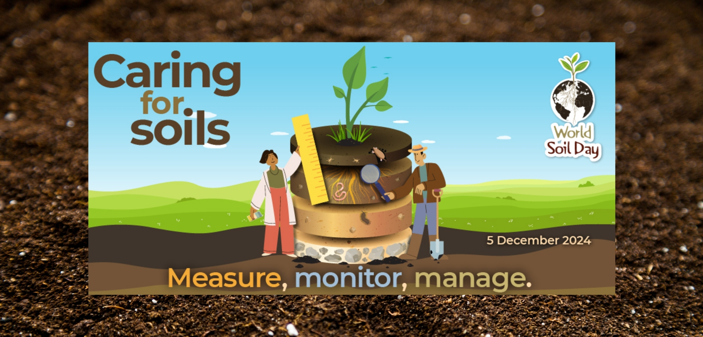
Education2024–25Topsoil Conservation Awareness Series 2024–25
Aligned with World Soil Day 2024's theme 'Measure, Monitor, Manage', a year-long series engaging students and farmers in sustainable soil stewardship.
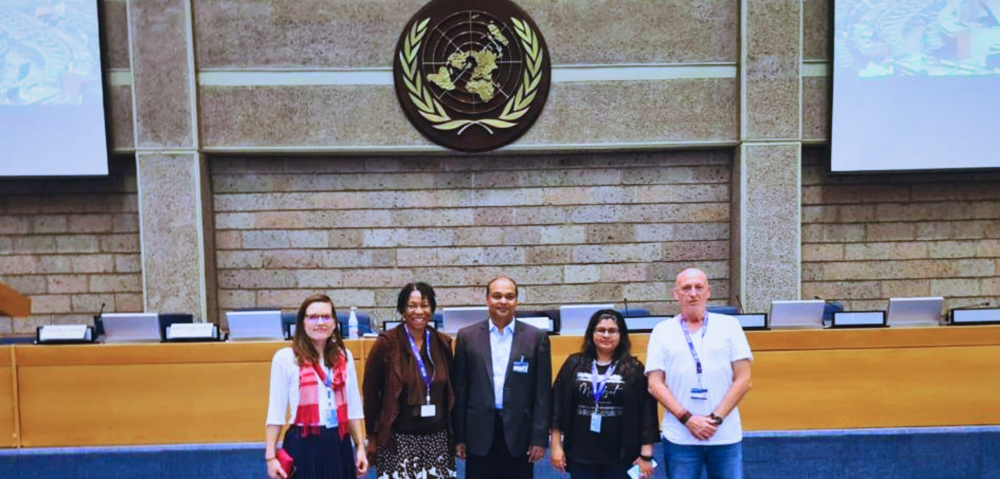
Conservation2026APSCC at the WWQA Conference
Dr. Nandhivarman Muthu represented APSCC at the UNEP-organised World Water Quality Alliance Conference in Nairobi, Kenya, connecting grassroots water action to global policy.
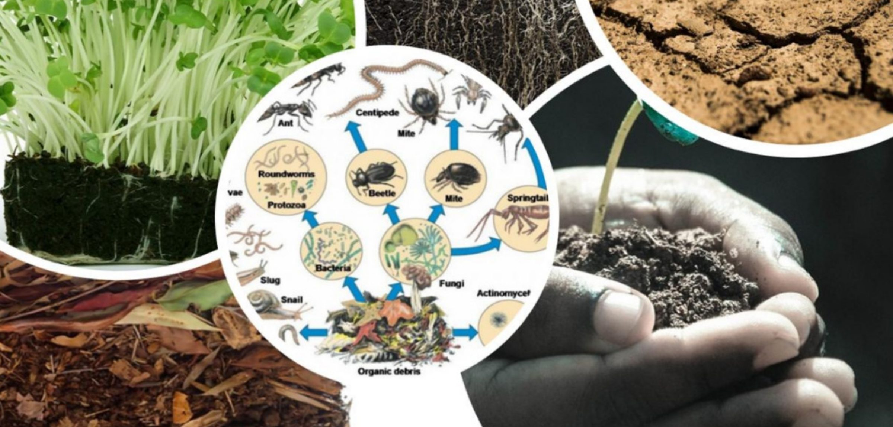
Education2026Global Young Soil Scientist Program (GYSS)
Engaging students and early-career researchers in soil science and conservation — inspired by the FAO Global Soil Doctors Programme and the Topsoil Conservation Series 2024–25.
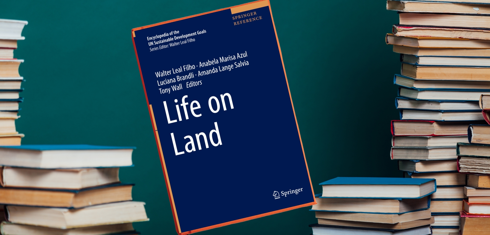
Research2023APSCC Contributes to Springer's Encyclopedia of SDG 15: Life on Land
Dr. Golda A. Edwin and Dr. Nandhivarman Muthu contributed landmark chapters to Springer's Encyclopedia of the UN SDGs “Life on Land” series — advancing evidence-based land management and soil science.
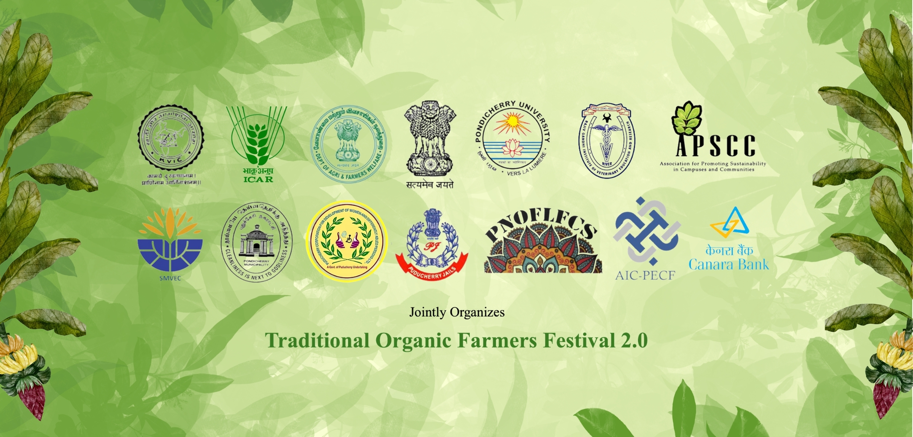
Program2025Traditional Organic Farmers Festival 2.0
APSCC co-organised the festival at Pondicherry University — uniting farmers, students, researchers and entrepreneurs to advance organic agriculture and green livelihoods.
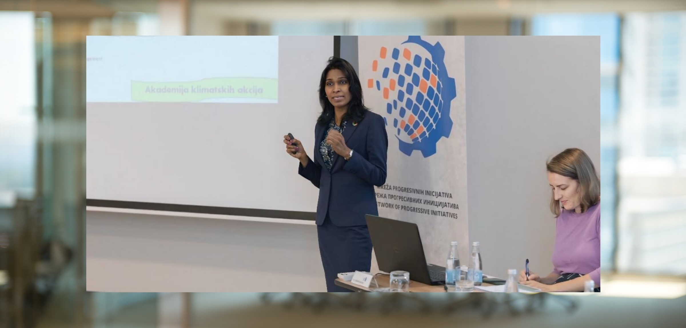
Partnership2026APSCC Keynote at UNDP Climate Action Academy, Bosnia & Herzegovina
Dr. Golda Edwin delivered the keynote on biodiversity and protected areas at the UNDP Climate Action Academy in Sarajevo, bridging South Asian expertise with European policy.
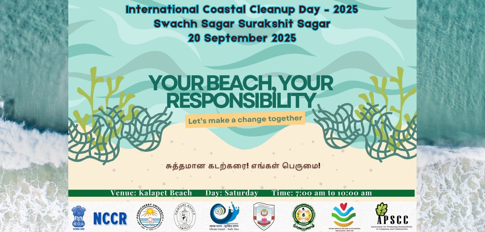
Conservation2025Cleaning Kalapet: APSCC Joins India's Coastal Cleanup Day 2025
APSCC co-organised International Coastal Cleanup Day 2025 at Kalapet Beach, Puducherry, under India's Swachh Sagar, Surakshit Sagar campaign — collecting marine-litter data to inform national policy.
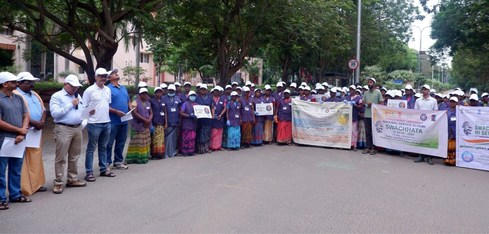
Conservation2024APSCC Joins International Coastal Cleanup Day 2024
Over 200 volunteers united at Kalapet Beach under India's Swachh Sagar, Surakshit Sagar mission, collecting 400 kg of waste.
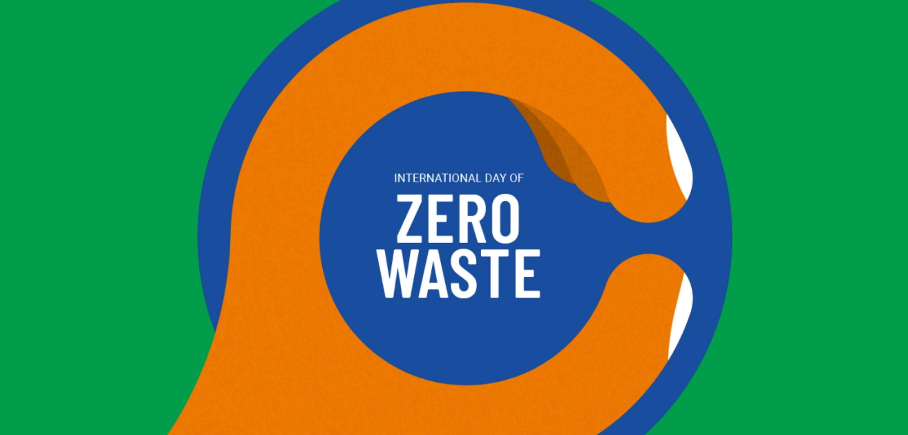
Conservation2024Towards Zero Waste — International Day of Zero Waste 2024
APSCC & Oulgaret Municipality host 'Towards Zero Waste and Sustainable Municipality' — an orientation for Bulk Waste Generators on the first International Day of Zero Waste.
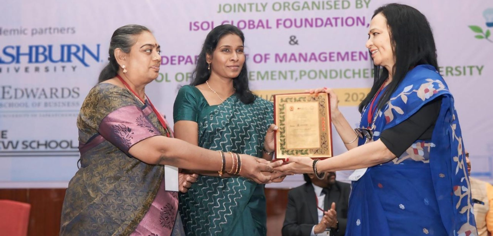
Research2026APSCC receives the ISOL NGO Award
Recognised for value-based sustainable organizations at the International Conference on Holistic Organisational Sustainability, Pondicherry University.
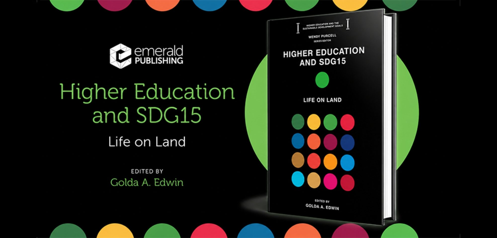
Research2026Higher Education and SDG 15: Life on Land
APSCC-edited Emerald volume positioning universities as catalysts for land restoration and biodiversity conservation.
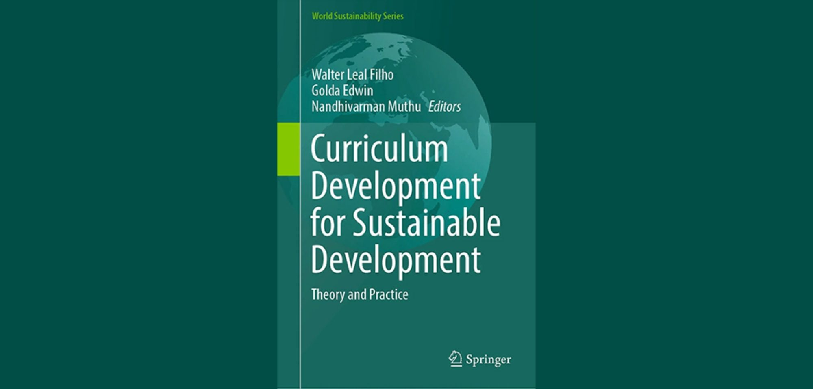
Research2026Curriculum Development for Sustainable Development
New Springer volume in the World Sustainability Series, co-edited by APSCC with contributions from 20+ countries.
ConservationConservation2024JIPMER Solid Waste Management Consultancy
Consultancy partnership with JIPMER hospital for implementing sustainable waste management protocols.
ProgramProgram2021Green Protocol: A Milestone for Sustainable Development
Landmark protocol establishing sustainability benchmarks for institutions across Puducherry UT.
ConservationConservation2021World Environment Day — #EcosystemRestoration
Community mobilization for the UN Decade on Ecosystem Restoration launch initiative.
ResearchResearch2021Nature-based Solutions for Disaster & Climate Resilience
Research initiative exploring NbS approaches for vulnerable coastal communities.
ResearchResearch2020Climate & Vulnerability Assessment of Kanagan Lake
Scientific assessment of climate vulnerability impacting Kanagan Lake ecosystem and surrounding communities.
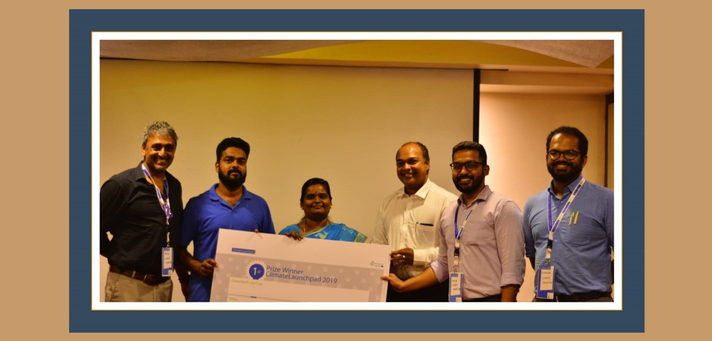
Conference2019Green Ideas Take Flight — ClimateLaunchpad Pitch & Boot Camp 2019
APSCC co-organised the Puducherry Chapter of ClimateLaunchpad — the world's largest green business ideas competition — at Pondicherry University, incubating clean-energy, waste and eco-tech ventures.
ConferenceConference2018International Conference on Interdisciplinary Approaches — ICIAEESD
Global conference on environment, ecosystems and sustainable development at Pondicherry University.
ProgramProgram2018Mitigate Indoor Air Pollution: Chief Secretariat, Puducherry
Green Protocol compliance initiative transforming the state secretariat into a sustainable building.
EducationEducation2017Training & Capacity Building for Green Protocol Compliance
Comprehensive training programme equipping Puducherry institutions with Green Protocol implementation skills.
ProgramProgram2017State Level Awareness Program — SLAPSWM 2017
State-level programme on sustainable waste management across Puducherry UT institutions.
ConservationConservation2016Wildlife Protection & Conservation Network
Establishing joint-action conservation networks for species of concern across Puducherry.
ResearchResearch2016Climate & Vulnerability Assessment of Bahour Lake
Scientific analysis of climate impacts on the Bahour Lake wetland ecosystem.
ConservationConservation2016Preserving Oussudu Lake — A Call for Collective Action
Community mobilization to protect the Ramsar-listed Oussudu Lake bird sanctuary.
ConferenceConference2015IIT-Madras & APSCC — Sustainability Network Summit 2015
Joint summit exploring green campus visions and sustainability networks with IIT Madras.
PartnershipPartnership2015APSCC Partners with Sustainability Literacy Test
Global partnership advancing sustainability literacy assessment across educational institutions.
PartnershipPartnership2015APSCC Partners with FAO Global Soil Partnership
Joining forces with UN FAO to promote soil health awareness and soil doctors programme in India.
ConferenceConference2014APSCC at US EPA's 9th National Sustainable Design Expo — Washington DC
Showcasing green campus innovations at the premier US sustainability exhibition.
ConferenceConference2014IIT Madras — S-NET 2014 on "Green Vision"
Sustainability summit exploring green campus strategies and research networks.
 Conference2013
Conference2013The Green Campus Summit 2013
A global dialogue on sustainability in education — the first-of-its-kind summit for Indian campuses.
EducationEducation2013Green Campus Initiative at Jawahar Navodaya Vidyalaya
Lab-to-land environmental education programme transforming campus sustainability.
PartnershipPartnership2012APSCC Partners with ULSF — Talloires Declaration
Formal partnership with University Leaders for a Sustainable Future to advance the Talloires Declaration across India.
ConferenceConference2012World Symposium on Sustainable Development — Parallel to Rio+20
APSCC's participation in the global sustainability dialogue alongside the Rio+20 Earth Summit.
Explore Further
Dive deeper
Scientific Contributions
Peer-reviewed papers, policy frameworks, and sustainability assessment tools developed by APSCC researchers.
News & MediaIn the Press
Coverage from The Hindu, Indian Express, Times of India, and international media on APSCC's work.
Get InvolvedPartner with APSCC
Join 15+ national & international organizations working toward sustainable campuses & communities.
Join the Movement
Build a sustainable future — together.
Whether you represent a campus, community, or corporation, there's a role for you in the APSCC network.
Interested in hosting a Green Campus Initiative at your institution, or joining as a research partner?
Get in touch